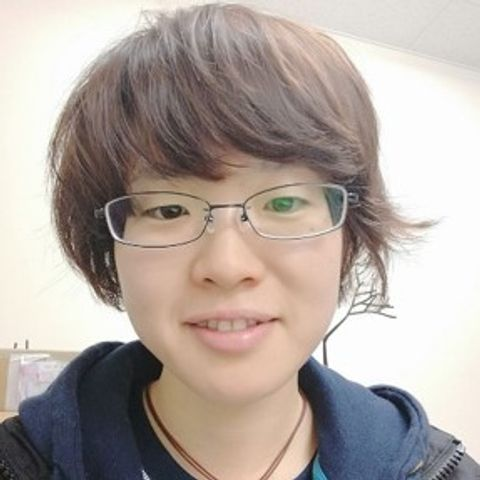
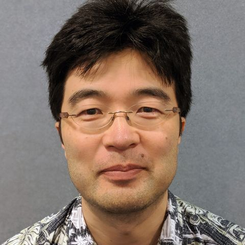
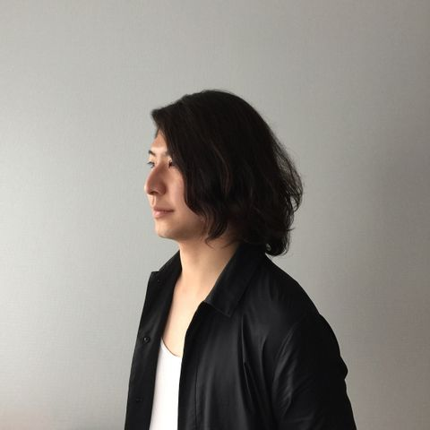

WISS委員一覧
WISS 2023実行委員
プログラム委員長
- 志築 文太郎 [web]
- 所属：筑波大学
- 専門：ヒューマンコンピュータインタラクション（HCI），入力インタフェース
実行委員長
- 中野 倫靖 [web]
- 所属：産業技術総合研究所
- 専門：歌声情報処理
副実行委員長
- 渡邊 恵太 [web]
- 所属：明治大学
- 専門：
会計
丸山 一貴，松村 耕平
出版・デザインコンペ
池松 香，加藤 邦拓,石井 綾郁,越後 宏紀
広報・学会リエゾン
横窪 安奈
WISSチャレンジ
門本 淳一郎
チャット
(未定)
動画生中継
高田 崚介，藤田 和之
デモ・ポスター
土田 修平，塚田 浩二,高橋 治輝,渡邉 拓貴
ネットワーク
奥本 隼，米田 英正
Web・サーバー
福里 司，山本 和彦
投票
鳴海 紘也
懇親会
倉本 到，五十嵐 悠紀
表彰
栗原 一貴，三上 浩司
企業スポンサー
秋山 耀，清木 昌
参加者管理
(未定)
学生ボランティア
宮藤 詩緒，大西 鮎美
WISS 2023プログラム委員

秋山 耀
- 所属：チームラボ
- 専門：
五十嵐 悠紀 [web]
- 所属：お茶の水女子大学
- 専門：コンピュータグラフィックス，ファブリケーション
池松 香 [web]
- 所属：ヤフー株式会社，東北大学
- 専門：ヒューマンコンピュータインタラクション（HCI），タンジブルユーザインタフェース（TUI）

越後 宏紀 [web]
- 所属：ソフトバンク株式会社
- 専門：ICT教育，ヒューマンコンピュータインタラクション（HCI），コミュニケーション支援

大西 鮎美 [web]
- 所属：神戸大学
- 専門：
奥本 隼
- 所属：TwoGate
- 専門：

梶本 裕之 [web]
- 所属：電気通信大学
- 専門：ハプティクス，バーチャルリアリティ
加藤 邦拓 [web]
- 所属：東京工科大学
- 専門：ヒューマンコンピュータインタラクション（HCI），ファブリケーション
門本 淳一郎
- 所属：東京大学
- 専門：
倉本 到 [web]
- 所属：福知山公立大学
- 専門：エンタテインメントコンピューティング，HAI/HRI，HCI

小池 英樹 [web]
- 所属：東京工業大学
- 専門：
坂本 大介 [web]
- 所属：北海道大学
- 専門：
志築 文太郎 [web]
- 所属：筑波大学
- 専門：ヒューマンコンピュータインタラクション（HCI），入力インタフェース
清木 昌
- 所属：
- 専門：
高田 崚介 [web]
- 所属：神戸市立工業高等専門学校
- 専門：
塚田 浩二 [web]
- 所属：はこだて未来大学
- 専門：
土田 修平 [web]
- 所属：お茶の水女子大
- 専門：ダンス情報処理，エンタテインメントコンピューティング
寺田 努 [web]
- 所属：神戸大学
- 専門：ウェアラブルコンピューティング，エンタテインメントコンピューティング，情報提示
中野 倫靖 [web]
- 所属：産業技術総合研究所
- 専門：歌声情報処理

鳴海 紘也 [web]
- 所属：東京大学
- 専門：形状変化インタフェース，ソフトロボティクス，デジタルファブリケーション
藤田 和之 [web]
- 所属：東北大学
- 専門：
松村 耕平
- 所属：立命館大学
- 専門：ヒューマンコンピュータインタラクション（HCI），身体性認知科学，知識メディア
丸山 一貴 [web]
- 所属：明星大学
- 専門：プログラミング環境，Webユーザインタフェース，大学ICTサービス
三上 浩司
- 所属：東京工科大学
- 専門：
宮藤 詩緒 [web]
- 所属：東京工業大学
- 専門：ヒューマンコンピュータインタラクション（HCI），プロジェクションマッピング，遠隔協調作業
山本 和彦 [web]
- 所属：YAMAHA
- 専門：機械学習，ヒューマンコンピュータインタラクション（HCI），音楽情報処理

米田 英正
- 所属：
- 専門：
渡邊 恵太 [web]
- 所属：明治大学
- 専門：